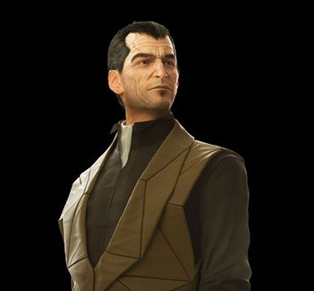

Junior Frontend Develover
Ruslan, Bobreshov
You can contact me:
- via VKontakte
- e-mail me DavidSarif@yandex.ru
Junior Developer learns the ways of GitHub
Qualification: Junior Frontend Developer(HTML, CSS, JS).
Code examples can be found here: GitHub
Finished several projects from courses including:
- Python, Frontend courses on Stepik
- Basic HTML+CSS on HtmlAcademy
- Some starter JS courses.
Graduated Don State Technical University with masters degree.
English skills : Upper Intermediate.